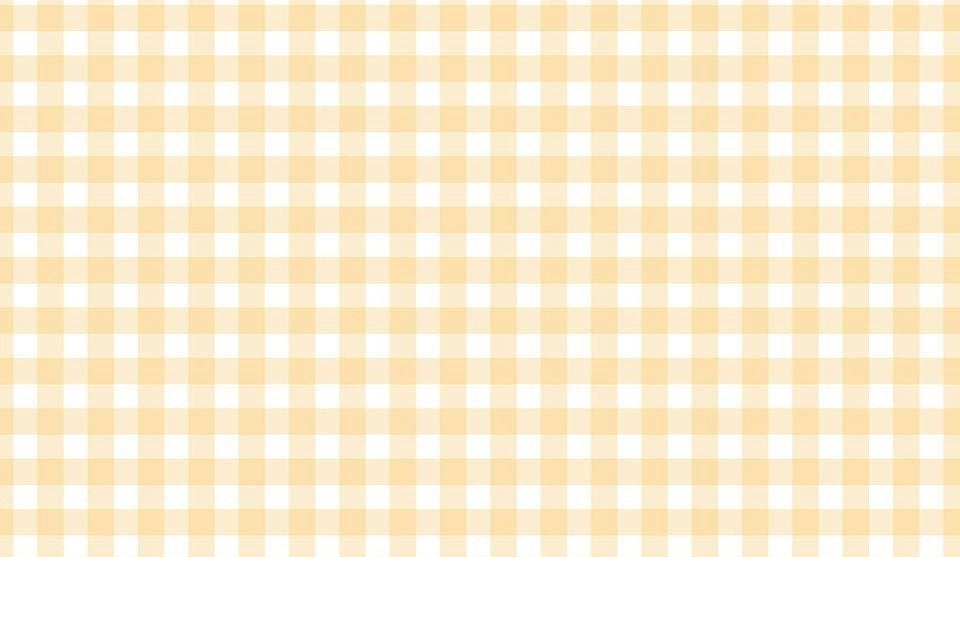
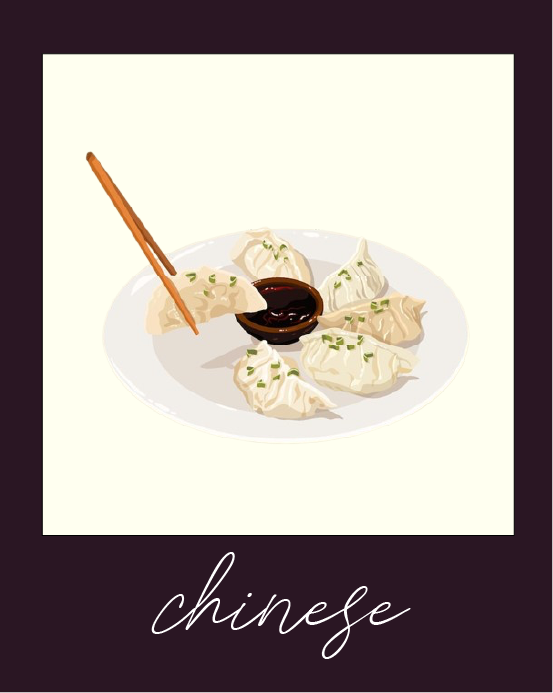
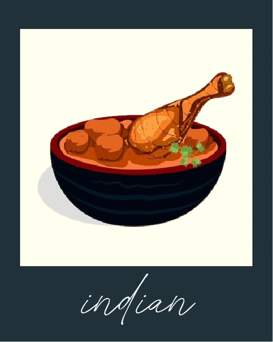
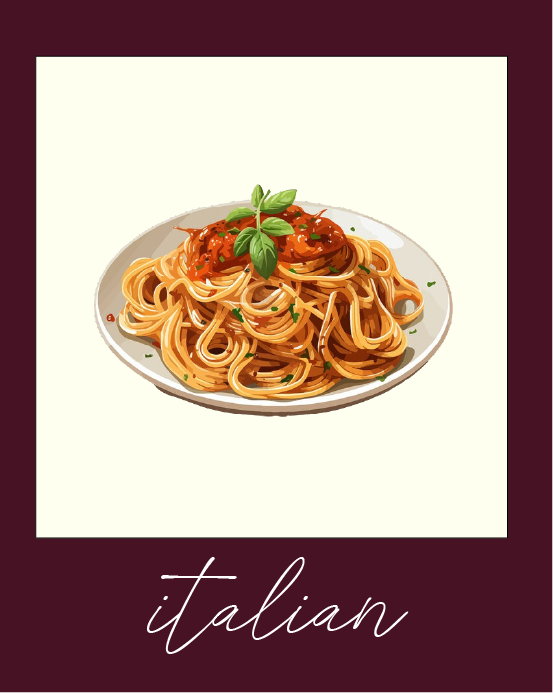
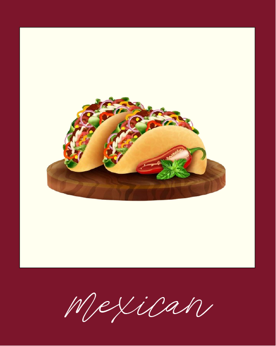
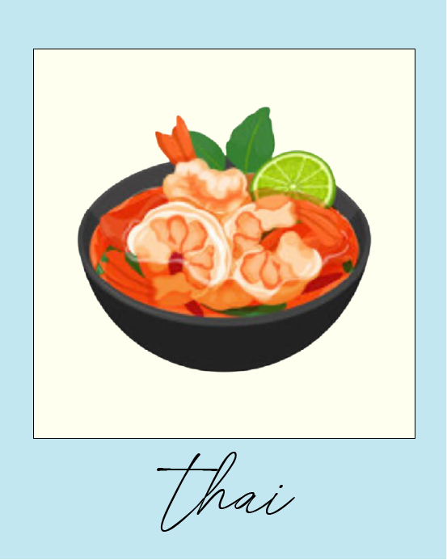

Craving something specific? From spicy curries to cheesy pasta, tacos to noodles,
let your cravings lead the way. Pick a cuisine and we'll point you to the best
spots to satisfy it.







- Szechuan Mountain House - 23 Saint Marks Pl
- CheLi - 19 Saint Marks Place
- Han Dynasty - 90 3rd Ave
- Málà Project - 122 1st Ave
- Uluh - 152A 2nd Avenue
- Red Onion - 277 East 10th St
- Jazba - 207 2nd Ave
- Curry Flavor - 324 E 6th St
- Milon Restaurant - 93 1st Ave #
- Bungalow - 24 1st Ave
- Via Della Pace - 87 East 4th Street
- Il Posto Accanto - 190 East 2nd Street
- Foul Witch - 15 Avenue A
- Numero 28 - 176 Second Avenue
- House of Pasta NYC - 511 East 12th St
- Jo's Taco - 226 E 14st
- Yellow Rose - 102 3rd Ave
- Sabor A Mexico Taqueria - 160 1st Ave
- Taqueria St. Marks Place - 79 Saint Marks Pl
- Electric Burrito - 81 St. Marks Pl
- Soothr - 204 E 13st
- Somtum Der - 85 Ave A
- Love Mama - 174 2nd Ave
- EIM Khao Mun Kai - 129 2nd Ave
- MayRee - 58 E 1st